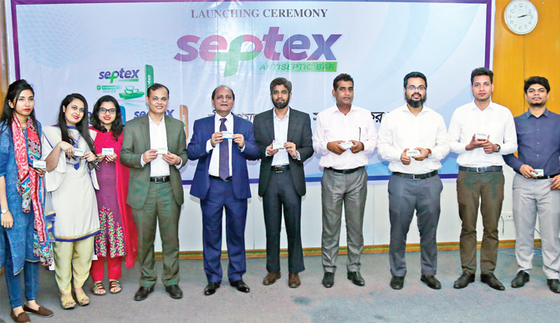

Welcome to our company!
Advanced Chemical Industries (ACI)The company operates through three reportable segments: Pharmaceuticals, Consumer Brands and Agribusiness.ACI established as the subsidiary of Imperial Chemical Industries (ICI) in 1968. It has been incorporated as ICI Bangladesh Manufacturers Limited on 24 January 1973.The company was renamed as Advanced Chemical Industries Limited (ACI Limited) on 5 May 1992.The company sold its insect control, air care and toilet care brands to SC Johnson & Son in 2015
read moreLatest News
21
jan
jan
ACI Nutrilife Rice Bran Oil Celebrates World Heart Day
ACI Nutrilife Rice Bran Oil Celebrates World Heart Day.ACI Nutrilife Rice Bran Oil has successfully observed World Heart Day on 29th of September 2018 in 20 cluster markets of Dhaka Metro. They ran a Health Campaign in 1500+ premium retail outlets and provided health checkup by professional paramedics to...19
jan
jan